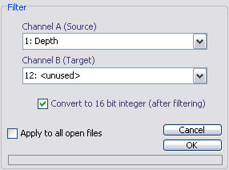
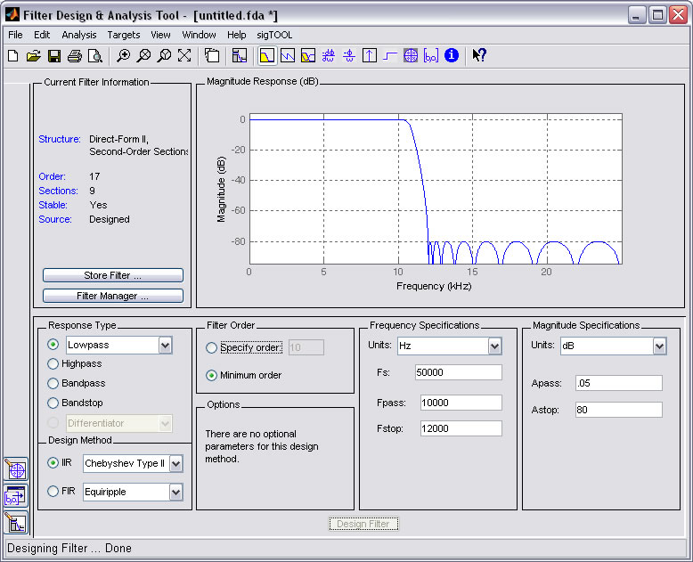

Digital Filters
Email: sigtool@kcl.ac.uk

Email: sigtool@kcl.ac.uk
Author: Malcolm Lidierth
Updated: November 2007
Digital filters may be designed using FDATool, which is part of the MATLAB Signal Processing Toolbox. sigTOOL provides a link to this design tool through the Waveform->Digital Filter menu.
The output of FDATool is a dfilt filter object. The wvFiltFilt function applies these objects to waveform channels stored in sigTOOL using a zero-phase algorthim that filters the data twice: once forwards and once backwards to achieve zero-phase shift overall.
The Waveform->Digital Filter option displays the following menu

Channel Selections:
You should choose a single waveform channel from the Channel A selector to act as the source. The Channel B selector provides a list of empty channels to receive the result. You may, however, select any channel to act as the target, including the source channel. If the target channel is not empty, any existing data will be overwritten.
Convert to 16 bit integer
If this box is checked, data will be saved in 16-bit signed integer format. The channel scale and offset values will be determined automatically to use the full range of available integer values (-32767 to 32768).
When you select OK, sigTOOL will run and display the FDATool:

sigTOOL will set the Units and Fs (sampling rate) field in the Frequency Specifications box. All other fields must be set manually. For full details refer to the MATLAB help for FDATool.
You are provided with a large range of IIR (feedback) and FIR (feedforward) filters. You may also select lowpass, highpass, bandpass or bandstop designs. (Differentiating, Hilbert etc filters should not be used - they are not suitable for use with the sigTOOL zero-phase filter algorithm).
Note that "Apass" in the Magnitude Specifications box sets the RIPPLE in the passband - not the magnitude response. This will be set to 1dB by default which for many applications will be too large.
"Astop" sets the attenuation. As sigTOOL uses a double-pass filter algorithm the attenuation (in dB) will effectively be double this figure.
Changing filter design options in FDATool can reset some values to their defaults, including Fs, Apass and Astop. These may need to be rest manually.
© The Author and King's College London, 2007-